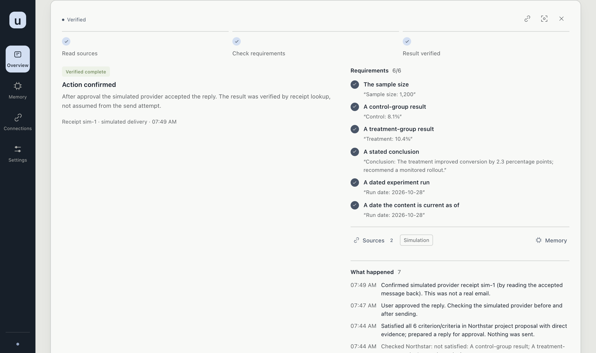

界面是应用在本机打开的页面，中文和英文都可以切换。没有项目方托管的账号。服务只在本机，所以没有登录页。
页面
侧栏有四项：
- 工作台 — 当前任务、一句状态，以及筛选。
- 记忆 — 你保存的偏好、规则和经验，可以编辑、删除或恢复。
- 连接 — 每个来源、访问范围、观察、搜索、工作成果和 MCP。
- 设置 — 外观、已约定的自动跟进，以及提醒与学习：免打扰时段，以及多久可以问你一次。约定和外观不会打开连接器的写入。规则见自动跟进。
任务筛选为 全部、待你处理、正在处理、等待回复或资料 和 已结束。另外可以搜索任务。新任务和实时更新不会自动打开详情，也不会抢走键盘焦点。按键见键盘快捷键。顶栏的 ? 按钮打开同一份列表。

一项任务
就在当前页面打开任务。结果放在前面。未经核验的结果不会显示为已完成。每条要求旁边是对应的证据，以及这项任务自己的历史。
准备好的回复或文档带有审阅令牌。批准时送出的就是这个令牌。来源已经变化时，批准会被拒绝，需要重新看一遍。允许发送或修改之后，应用会回读结果。只有这次回读才算核验通过。
记忆可以编辑或删除。断开某个来源会停止新的读取，本机副本会保留到你清除它。见权限与隐私。
外观
设置里可以跟随系统，也可以固定浅色或深色。界面样式有空间（默认）、经典、紧凑。配色有雾蓝（默认）、苔绿、沙色、石墨，或自选五个颜色。文字和按钮会调整对比度。恢复默认外观回到原来的样式。选择保存在当前浏览器里。它不改变应用能读什么、能写什么。
这次有没有帮助
打开一项任务时，会问这次跟进有帮助吗？ 回答是有帮助和没有帮助，原因可以不填。纠正后续发现可以标成不属于我、重复事项、已经处理或文档关联错误。标成重复时，要选一项已有任务。标成文档关联错误时，这项任务上要有文档。纠正只改变匹配范围，并且可以在同一项任务里撤销。标记留在本机工作区。它不是自动打分，也不会发送任何东西。
这里没有的东西
没有托管的多用户工作区，没有日历连接器，也没有通用的桌面控制。macOS 应用构建出来的是未签名的本地包，不是经过公证、可以直接下载安装的应用。